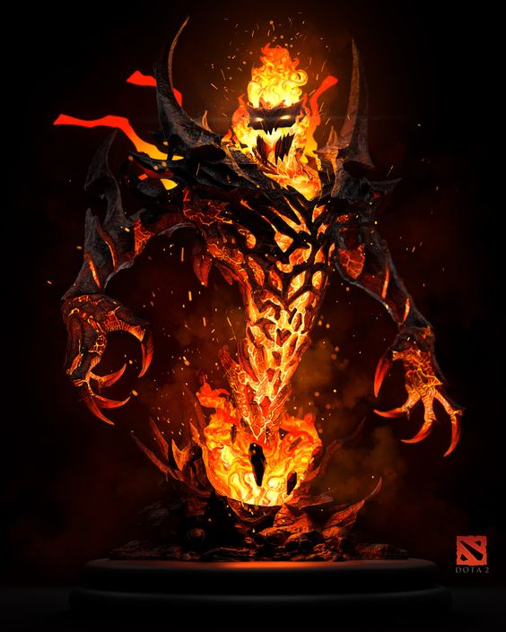
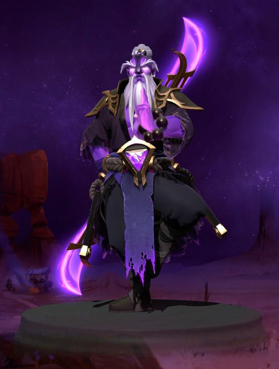
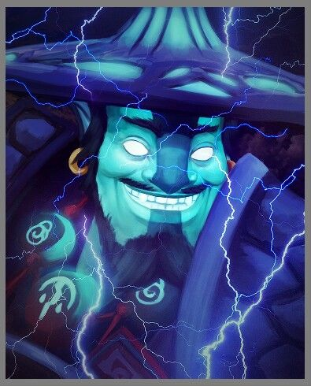

Любимой игрой дединсайдов является Dota 2. Их в основном можно встретить на рейтинге "герой" и ниже. Неприятная особенность их стиля игры заключается в черезмерной даже для этого комьюнити токсичности при полном игнорировании собственных ошибок. Дединсайды уверены, что играют лучше всех, а проигрывают они постоянно потому, что им попадаются недостаточно хорошие союзники, хотя зачастую сами из-за своей твердолобости руинят игры.
Отличить дединсайда в доте 2 можно ещё на этапе подбора - как правило они ставят на аватарку персонажей из аниме и ники, содержащие японские иероглифы, слова: "deadinside", "zxc", "ghuol", и подобное. Они почти всегда идут стоять мид, так как это - максимально независимая от команды позиция. Часто берут таких персонажей, как: Shadow Fiend, Void Spirit, Storm Spirit.
  Винрейт этих персонажей за последний месяц:
| Shadow Fiend | Void Spirit | Storm Spirit |
|---|---|---|
| 49.76 | 48.06 | 48.06 |
| 50.26 | 48.82 | 48.82 |
| 49.85 | 47.50 | 47.50 |
| 49.86 | 47.43 | 48.38 |
| 49.27 | 47.65 | 47.43 |
Для человека, незнакомого с дотой 2 "zxc" - просто набор букв, а для некоторых уже и вовсе атрибут всех дединсайдов в интернете. На самом же деле "zxc" - это сочетание клавиш, отображающее расположение способностей персонажа Shadow Fiend из доты 2. Изначально его скиллсет имеет стандартную раскладку "qwe", но располагать способности именно таким образом популяризировал стример zxcursed. Он также является музыкантом и известен под псевдонимиом shadowraze(именно такое название имеют способности Shadow Fiend'a) shadowraze пишет песни в стиле "дота-реп" - смесь фонка, электронной музыки, hyper-pop'а и репа новой школы. Все вышеперечисленные жанры являются характерной для дединсайдов музыкой.